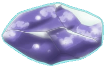
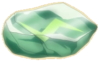
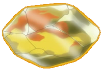
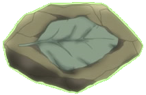
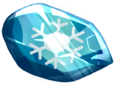

Como Evoluir a Eevee
Existem 2 métodos para evoluir a Eevee. Cada método resulta em uma evolução diferente!
1. Evoluir com Pedras
Use uma Pedra Elemental no inventário com a Eevee selecionada.
-

Pedra d'Água
Vaporeon Água
-

Pedra Trovão
Jolteon Elétrico
-

Pedra de Fogo
Flareon Fogo
-

Pedra Folha
Leafeon Planta
-

Pedra Gelo
Glaceon Gelo
2. Evoluir com Vínculo
Aumente o vínculo com sua Eevee seguindo estes passos.
- Carregue a Eevee na equipe principal.
- Use-a em batalhas sem deixar que ela desmaie.
- Alimente-a com PokéBagas que aumentam o vínculo.
- Quando o vínculo estiver alto, suba de nível.
-
Durante o dia
Espeon Psíquico
-
Durante a noite
Umbreon Sombrio
-
Com um golpe do tipo Fada
Sylveon Fada
Glossário
Termos que aparecem nesta página.
- Vínculo
- Valor oculto que cresce conforme você usa e cuida do Pokémon. Vai de 0 a 255.
- Pedra Elemental
- Item que provoca a evolução imediata de Pokémons específicos.
- Evolução irreversível
- Uma vez que a Eevee evolui, não é possível reverter. Planeje antes de usar a pedra!